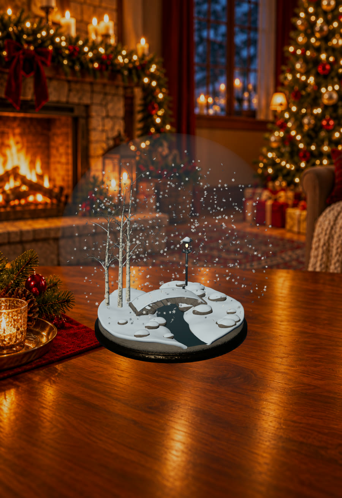

A study in how individual decisions become collective movement. Each bird responds to its neighbors and the air around it. The flock’s changing shape emerges from those local rules.
In the native prototype, a mouse or finger leaves a fading breeze through the flock. A second, experimental flight model adds banking, lift, drag and thrust.
Medium
Unity / C#
Status
Mac prototype
Focus
Emergent behavior
Research flight · 40-second recorded simulation
Actual simulation trajectories in a diagnostic renderer. This is a recorded replay; interaction is available in the native prototype.

Captured from the native iPhone prototype. Room artwork was AI-generated; the globe is rendered 3D geometry.
02 / An object to play with
Snowglobe
A little winter. A world in your hands.
A miniature bridge, a quiet stream, birch trees and a lantern. Pick up the globe, turn it, give it a shake, and watch the snow move through the scene.
Nine hundred individual flakes respond to motion and gravity. The room stays still as the globe turns; the snow keeps moving independently inside it.
Medium
SwiftUI / RealityKit / Blender
Status
Private iPhone prototype
Focus
Touch, motion & atmosphere
In development. No public app release yet.
A note from the workbench
Following a small idea to see where it goes.
I’m Dave. This is a collection of things I’m working on: experiments in simulation, playful interaction, and small digital worlds.
These are prototypes, still being explored and refined. This page is a place to share a closer look at the work as it takes shape.